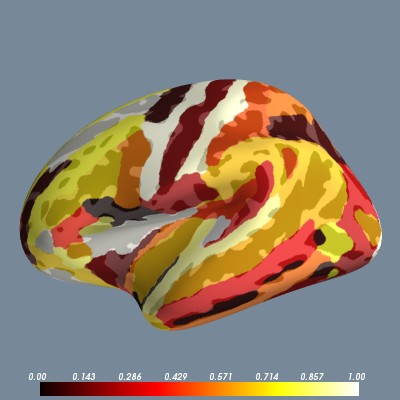

Here we demonstrate how to take the results of an ROI analysis performed within each region of some parcellation and display those values on the surface to quickly summarize the analysis.
Python source code: plot_parc_values.py
print __doc__
import os
import os.path as op
import numpy as np
import nibabel as nib
from surfer import Brain
subject_id = "fsaverage"
hemi = "lh"
surface = "inflated"
"""
Bring up the visualization
"""
brain = Brain(subject_id, hemi, surface,
config_opts=dict(background="lightslategray",
cortex="high_contrast"))
"""
Read in the aparc annotation file
"""
aparc_file = op.join(os.environ["SUBJECTS_DIR"],
subject_id, "label",
hemi + ".aparc.a2009s.annot")
labels, ctab, names = nib.freesurfer.read_annot(aparc_file)
"""
Make a random vector of scalar data corresponding to
a value for each region in the parcellation.
"""
roi_data = np.random.random(len(names))
"""
Make a vector containing the data point at each vertex.
"""
vtx_data = np.zeros(len(labels))
for i, data in enumerate(roi_data):
vtx_data[labels == i] = data
"""
Display these values on the brain.
Use the hot colormap and add an alpha channel
so the underlying anatomy is visible.
"""
brain.add_data(vtx_data, 0, 1, colormap="hot", alpha=.7)